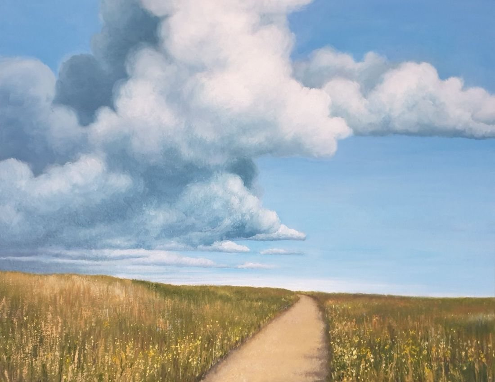

Pathways by the Sea
No. 25- Medium
- Oil on canvas board
- Size
- 40 × 50 cm
- Year
- 2023
- Inspired by
- Pathway on the dunes above Leasowe Beach Wirral
- Price
- Not for sale
A pathway along the open stretch of land above the beach, leading invitingly into the horizon and beyond.
 Beach in Kerry, Ireland
Beach in Kerry, Ireland Thurstaston Beach at Sunset
Thurstaston Beach at Sunset